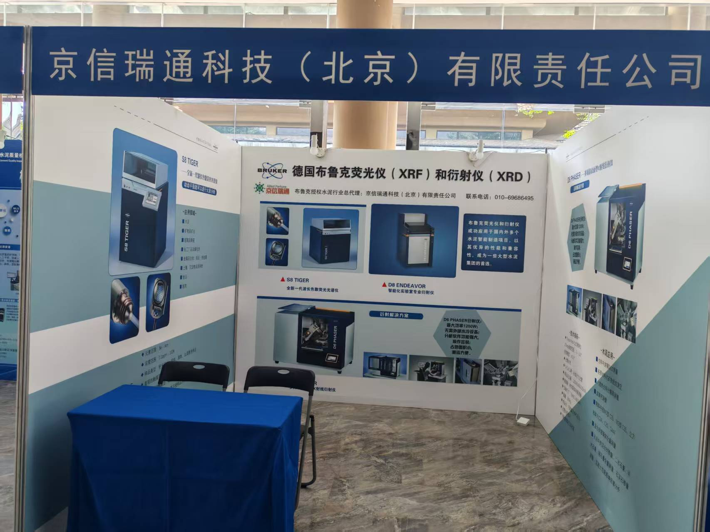
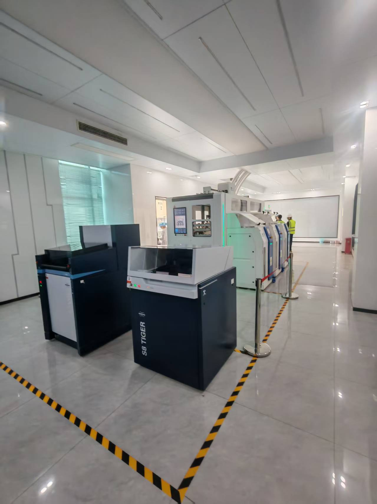
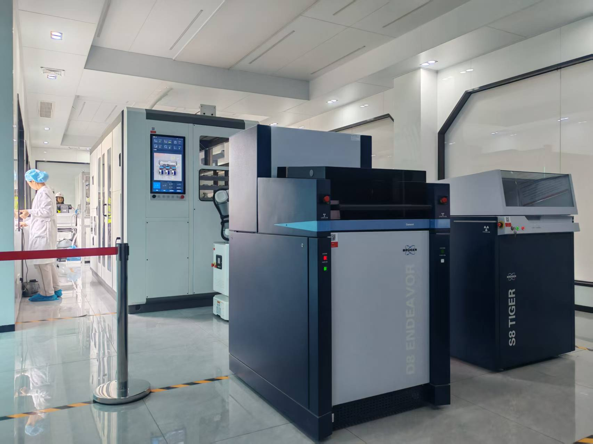
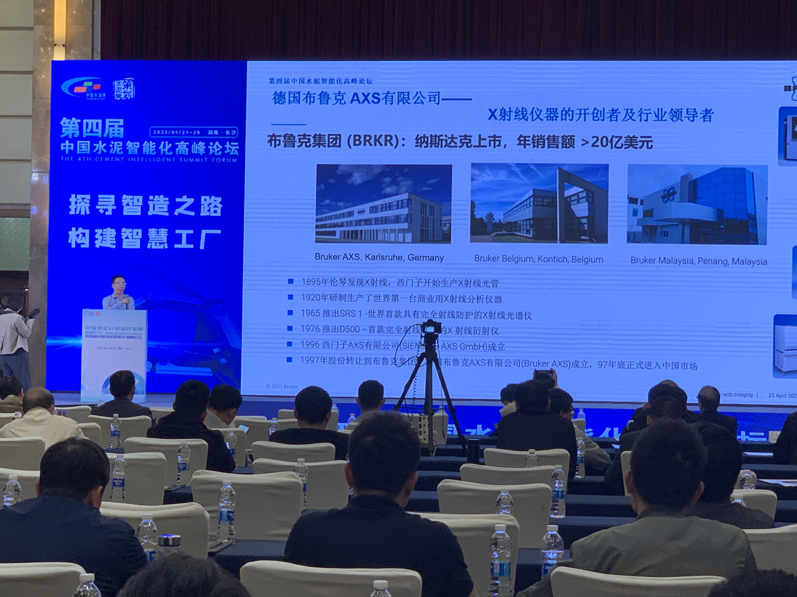
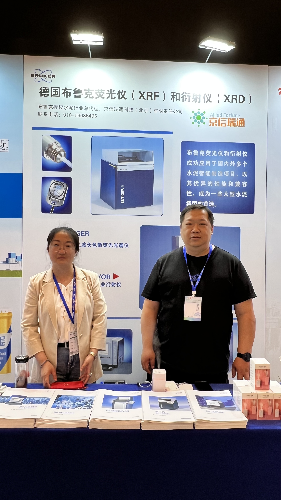

实时追踪京信瑞通科技在水泥工业质控前沿的最新动态、项目签约喜报及技术服务进展。

京信瑞通科技应邀出席全国水泥品质指标检验大对比表彰会暨第九届水泥质量控制技术论坛。作为德国布鲁克（Bruker）水泥行业授权总代理，京信瑞通在现场展示了专为智慧水泥厂构建的自动化实验室解决方案。系统通过 XRF 与 XRD 在线集成技术，实现生料全自动配料、熟料真实晶相分析及游离钙（f-CaO）极速定量，为水泥企业关键环节提供卓越的质控把关，获得现场专家的高度认可。


近日，黄河同力水泥智能化实验室正式建成投运。京信瑞通科技为该项目提供布鲁克 S8 TIGER 荧光光谱仪和 D8 ENDEAVOR 衍射仪，并完成分析设备与智能实验室系统的对接应用。依托智能制样、自动输送及生产中控系统的协同运行，实现分析数据秒级反馈，为熟料烧成稳定控制、产品质量优化和工厂智能制造提供了强有力的数据支撑。


在“第四届中国水泥智能化高峰论坛”上，京信瑞通科技携手德国布鲁克（Bruker）展示了水泥“智能化实验室”中央集成方案。该系统将现场自动取样与后道自动化实验室无缝并行，全面突出 XRF 与 XRD 的质控核心优势：
▪ XRF 成分控制优势： 实现对生料饱和比（KH）、硅酸率（SM）的无人工干预极速检测，实时指导精准配料，并强力追踪替代燃料中的硫、氯等有害元素。
▪ XRD 物相定量优势： 基于行业顶尖的 TOPAS 专家算法，将熟料中 C3S、C2S 真实晶相以及游离钙（f-CaO）的无损定量分析缩短至几分钟内，彻底消除传统化学法误差，全面赋能水泥企业降本增效与智能化转型。